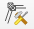

QGIS tutorial¶
Tip
This tutorial involves embedded videos featuring the text descriptions in every section.
To get ready, watch the following video and/or make sure to install QGIS (detailed instructions).
Sebastian Schwindt @ Hydro-Morphodynamics channel on YouTube.
Videos not showing up (Firefox Can’t Open This Page)
If videos are not displaying, this might be caused by strict privacy settings. To resolve the issue, either open the video links by clicking on the Open Site in New Window button or by changing browser privacy settings (e.g., in Mozilla Firefox).
First Project¶
Once you installed QGIS, launch the program and walk through the following steps to make fundamental settings:
Open QGIS
Create a new project (New Empty Project)
Verify Project Properties:
In the top menu go to Project > Properties
Set the Coordinate Reference System CRS to EPSG:4326:
WGS84 (Coordinate Reference System) Bounds: -180.0000, -90.0000, 180.0000, 90.0000
Projected Bounds: -180.0000, -90.0000, 180.0000, 90.0000
Scope: Horizontal component of a 3d system. Used by the GPS satellite navigation system and for NATO military geodetic surveying.
Last Revised: Aug. 27, 2007
Area: World
Learn more at http://epsg.io
Retrieve point coordinates in any CRS format
Convert between different CRSs (e.g., convert 48.745, 9.103 from EPSG 3857 to EPSG 4326)
Save the project as qgis-project.qgz in a new *qgis-exercise folder
Sebastian Schwindt@ Hydro-Morphodynamics channel on YouTube.
Hint
All files created in this tutorial can be downloaded here.
Panels, Toolbars, and Plugins¶
Follow the below illustrated instructions to enable the QGIS Toolbox.

Fig. 16 Open QGIS’ Toolbox window from the main menu.¶
The conversion between geospatial data types and numerical (computational) grids can be facilitated with plugins. To install any plugin in QGIS, go to the Plugins menu > Manage and Install Plugins... > All tab > Search... for a relevant plugin and install it.
In the context of river analysis, the following plugins are recommended and used at multiple places on this website:
The Crayfish plugin for post-processing of numerical model output.
The BASEmesh plugin provides routines for creating computational meshes for numerical simulations with BASEMENT.
The PostTelemac plugin enables geospatial visualization and conversions of numerical model results produced tiwht TELEMAC.
Basemaps for QGIS (Google or Open Street Maps Worldmap Tiles)¶
Note
A fast internet connection is required for adding online base maps.
To add a base map (e.g., satellite data, streets, or administrative boundaries), go to the Browser, right-click on XYZ Tiles, select New Connection…, add a name and a URL of an online base map. Once the new connection is added, it can be added to a QGIS project by drag and drop just like any other geodata layer. The below figure illustrates the procedure of adding a new connection and its XYZ tiles as a layer to the project. To overlay multiple basemaps (or any other layer), right-click on a layer, then Layer Properties > Transparency > modify the Opacity (e.g., to 50%).
Fig. 17 Add a base map to QGIS: (1) locate the Browser (2) right-click on XYZ-Tiles and select New Connection… (3) enter a Name and a URL (see below table) for the new connection, click OK (4) drag and drop the new tile (here: Google Satellite) into the Layers tab.¶
Sebastian Schwindt@ Hydro-Morphodynamics channel on YouTube.
The following URL can be used for retrieving online XYZ tiles (more URLs can be found on the internet).
Provider (Layer Name) |
URL |
|---|---|
ESRI World Imagery |
|
ESRI Street |
|
ESRI Topo |
|
Google Satellite |
|
Google Street |
|
OpenStreetMap (OSM) |
|
OSM Black and White |
|
Tip
Most basemaps are provided in the EPSG:3857 -WGS84 / Pseudo Mercator coordinate system (CRS). To use custom geodata products, make sure that all other layers have the same coordinate system. Read more about coordinate systems and projections in the Geospatial Data and shapefile projection sections.
Create a Shapefile¶
This section guides through the creation of a point, a line, and a polygon Shapefile (vector data). To read more about such vector data and other spatially explicit data types, read the section on Geospatial Data.
Create a Point Shapefile¶
Start with loading satellite imagery and a street basemap (see above) in the layers pane. Zoom on central Europe and roughly locate Stuttgart in Southwest Germany. Find the heavily impaired Neckar River in the North of Stuttgart and move in the upstream direction (i.e., Eastern direction), pass the cities of Esslingen and Plochingen until you get to the confluence of the Neckar and the Fils rivers. From there, follow the Fils River in the upstream direction for a couple of hundred meters and locate the PEGELHAUS (i.e., a gauging station at the Fils River - click to visit). To facilitate finding the gauging station in the future, we will now create a point shapefile as explained in the following video and the analogous instructions below the video.
Sebastian Schwindt@ Hydro-Morphodynamics channel on YouTube.
In the QGIS top menu go to Layer > Create Layer > New Shapefile Layer
Define a filename (e.g., gauges.shp - may not be longer than 13 characters), for instance, in a folder called qgis-exercise.
Geometry type:
MultiPointAdditional dimensions:
Z(+M Values)Add two new fields:
StnName(Text data)StnID(Whole number)
Edit/draw points
Toggle Editing (i.e., enable by clicking on the yellow pen ) > Add Point Feature
Click on the PEGELHAUS to draw a point and set
StnName:PlochingenFilsStnID:00025
Add more points if you like.
Finalize the edits by clicking on Save Edits > Stop Editing
Improve the visualization by changing the symbology:
Double-click on the gauges layer > Symbology
Highlight Simple Marker, change to + symbol, and change fill color and size.
Highlight Marker and change the Opacity
Click Apply and OK
Verify the point settings in the Attribute Table (right-click on the gauges layer and select Attribute Table).
Create a Line Shapefile¶
Create a Line Shapefile called CenterLine.shp to draw a centerline of the Fils \(\pm\) 200 m around the PEGELHAUS gauge, similar to the above-created point shapefile. Add one text field and call it RiverName. Then draw a line along the Fils River starting 200 m upstream and ending 200 m downstream of the PEGELHAUS by following the river on the OpenStreetMap layer. See more in the following video.
Sebastian Schwindt@ Hydro-Morphodynamics channel on YouTube.
Create a Polygon Shapefile¶
To delineate different zones of roughness (e.g., as needed for a two-dimensional numerical model), create a Polygon Shapefile called FlowAreas.shp. The file will contain polygons zoning the considered section of the Fils into floodplain and main channel bed. Name the first field AreaType (type: Text) and the second field ManningN (type: Decimal Number). See more in the following video and the instructions below the video.
Sebastian Schwindt@ Hydro-Morphodynamics channel on YouTube.
To draw the polygons:
Enable snapping to avoid gaps between floodplain and main channel polygons (Snapping toolbar > Enable Snapping and Avoid Polygon Overlapping)
Start drawing by clicking on the map (right-click finalizes Polygon)
Draw one polygon of the main channel and after finalizing set:
AreaType:MainChannelManningN:0.028
Draw two more polygons of the right-bank (RB) and left-bank (LB) floodplains, and set:
AreaType:FloodPlainRBandFloodPlainLBManningN:0.05(both)
If you made a drawing error, use either the Attribute Table to select and delete entire polygons, or use the vertex tool  from the menu bar.
After drawing all polygons, Save edits and Toggle Editing (deactivate).
To improve the visualizatoin, modify the Symbology to Categorized as a function of the
AreaTypefield: Keep Random Colors > Click on Classify > Apply and if you like the visualization, click OK.
Rasterize (Polygon to Raster)¶
Many numerical models required that roughness is provided in Gridded Cell (Raster) Data format. To this end, this section features the conversion of the above-created polygon shapefile (FlowAreas.shp) to a roughness Gridded Cell (Raster) Data. The following video and the instructions below the video describe how the conversion works.
Sebastian Schwindt@ Hydro-Morphodynamics channel on YouTube.
To convert a geospatial vector dataset, use the Rasterize tool:
In the QGIS menu bar make sure to enable the Processing Toolbox panel (View > Panels > Processing Toolbox)
In the Processing Toolbox > search (tap) Rasterize > select Rasterize (vector to raster)
Hint
If the Crayfish plugin is installed, an additional Rasterize tool will show up, which we will not use in this tutorial (i.e., make sure to select Rasterize (vector to raster)).
In the Rasterize (Vector to Raster) window set:
Input layer:
FlowAreasField to use for a burn-in value:
ManningNOutput raster size units:
PixelsWidth/Horizontal resolution:
100(the smaller, the coarser the raster)Height/Vertical resolution:
100(the smaller, the coarser the raster)… scroll down …
Output extent: click on the … button > Calculate from Layer >
FlowAreasRasterized (FILE NAME) > click on the … button > Save to File… >
roughness.tifClick Run
Set the Symbology to Singleband pseudocolor with Interpolation:
Discrete, Colorramp:Magma, Mode:Equal Interval> Apply. If the visualization is satisfactory, click OK.
Tip
The conversion between geospatial data types can be facilitated by using Python. Read the section on Raster to Vector Conversion and Vice Versa to learn more.
QGIS Raster Calculator (Map Algebra)¶
Some models preferably (default use) Manning’s n, others use the Strickler roughness coefficient \(k_{st}\), which is the inverse of Manning’s n (i.e., \(k_{st} = 1/n\) - read more about roughness coefficients in the 1d Hydraulics (Manning-Strickler Formula) exercise). Thus, transforming a Strickler roughness raster into a Manning roughness raster requires performing an algebraic raster (pixel-by-pixel) operation. The next video and the instructions below the video feature the usage of the QGIS Raster Calculator to perform such algebraic operations.
Sebastian Schwindt@ Hydro-Morphodynamics channel on YouTube.
Start with opening Raster Calculator from QGIS menu bar (Raster > Raster Calculator…). Then, convert the above-created roughness.tif raster of Manning’s n values to a Strickler roughness raster:
Define an Output layer (e.g., qgis-exercise/roughness-stickler.tif) and keep the Output format of GeoTIFF.
Optionally select a layer extent corresponding to the above-created roughness.tif raster.
In the Raster Calculator Expression frame type 1, then click on the / button (Operators frame), then select roughness@1 from the Raster Bands frame.
The Raster Calculator Expression frame should now contain:
1 / "roughness@1", where the@sign refers to band number1.Click OK to run Raster Calculator.
After successful calculation, optionally modify the symbology of the new layer (roughness-stickler).
Tip
To implement a tailored raster calculator for batch-processing of raster files with Python read the Create and combine HSI rasters section in the Script-Create a Habitat Suitability Map exercise.
Create Layout and PDF / JPG (or other) Maps¶
Georeferenced images in GeoTIFF or other raster formats, possibly with super-positioned shapefiles on top, are handy and flexible for use with geospatial software, such as QGIS, but not appropriate for presentations or reports. For presentation purposes, geospatial imagery or maps should preferably be exported to common formats, such as the Portable Document Format (PDF) or JPEG/JPG. To create commonly formatted maps with QGIS, first, a new (print) layout needs to be created, which can then be exported to a common map format (e.g., along with a legend, a scale bar, and a North arrow). The following video and the descriptions below the video guide through the map creation process with QGIS.
Sebastian Schwindt@ Hydro-Morphodynamics channel on YouTube.
Start with creating a new print layout by clicking on the Project drop-down menu, then select New Print Layout. In the new print layout prepare the map and export the map as follows:
Set a Layout title (e.g., exercise-layout).
In the new (exercise-layout) Layout:
Go to Add Item > Add Map.
Draw a rectangle that will contain the map.
Add Item > Add Scale Bar
To control scales and units shown in the scale bar:
In Items panel, highlight
<Scalebar>and find the Item Properties tab below.In the Item Properties tab modify units to your convenience.
Add Item > Add Legend
To control elements of the legend:
In Items panel, highlight
<Legend>and find the Item Properties tab below.In the Item Properties tab, find Legend Items > disable Auto update > remove OpenStreetMap and Google Satellite.
Toggle through other Items in the Add Item menu bar (e.g., Arrow for Northing).
Save the layout project (from top menu Layout > Save Project)
Export the map to common formats:
For JPG or PNG: Layout > Export as Image
For PDF: Layout > Export as PDF
Optional, for SVG-vector graphs: Layout > Export as SVG
QGIS has many other capacities, but this fundamental tutorial should have provided you with the necessary knowledge to leverage the power of QGIS for many applications.